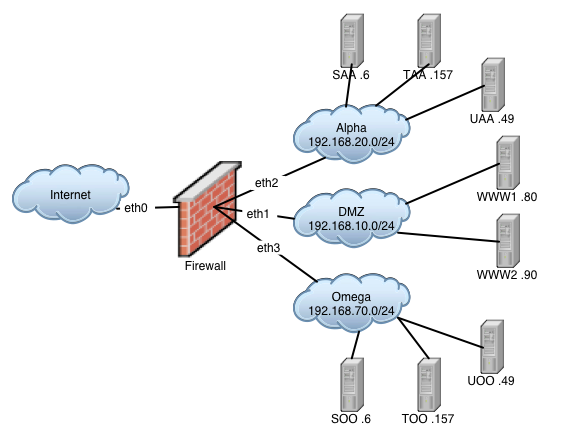

The Treasure Hunt Dataset
This dataset is the result of a class exercise in a graduate security class taught at UC Santa Barbara by Giovanni Vigna. If you find this dataset useful, please send an email message to vigna@cs.ucsb.edu, describing how you used it.
Description of the Exercise
The class was divided into two teams, Alpha and Omega, competing against each other in a treasure hunt. The goal of the treasure hunt was to break into a simulated (yet realistic) payroll system and perform a money transfer transaction. Each team had to perform a number of tasks (e.g., scan a network or break into a host). Each task had to be completed in a limited amount of time (e.g., 30 minutes). The first team that achieved the task got 5 points. If the other team completed the task within the specified time, it received 3 points. If the time elapsed and the team was not able to complete the task, then a cheat-sheet was provided so that the task could be completed, but no points were given. A task was disclosed only after the previous one was completed by both teams. The list of tasks is presented in Table 1.
In preparation for the exercise it was suggested that each team build expertise in a list of topics: network scanning techniques, attacks against SQL servers (both local and remote), NIS-based and NFS-based attacks, buffer overflow attacks (both local and remote), privilege escalation techniques, password cracking techniques, attacks against Apache web servers, attacks against CGI applications. This list was provided to focus the energy of the teams on techniques that would be useful during the exercise.
It was made very clear to the students that the ultimate goal of the exercise was to perform a multi-step attack that was as realistic as possible. This is particularly useful for alert correlation purposes. Therefore, an important by-product of this exercise was the Tcpdump data, BSM data, Windows event logs, and Snare events collected on the networks and hosts used during the exercise.
| Task | Description | Max Duration |
| 1 | Determine the active hosts in subnet X.Y.Z. Also determine each host's OS and the services/applications that are remotely accessible. Scanning techniques that will evade detection by the Snort system will receive additional bonus points. | 20 minutes |
| 2 | Get interactive access to the web server host by exploiting a web-based vulnerability. You must be able to login into the host as a user account other than root. | 30 minutes |
| 3 | Get root privileges on the web server host. | 30 minutes |
| 4 | Determine the hosts that are located in the specified internal subnet. Also determine their OSs and the services/applications that are remotely accessible. Scanning techniques that will evade detection by the Snort system will receive additional bonus points. | 20 minutes |
| 5 | Access the MySQL database on host SQL and obtain the content of the table Employees. | 20 minutes |
| 6 | Get interactive access to the MySQL server host. You have to be able to login with an account that is not root | 20 minutes |
| 7 | Get root access to the MySQL server host. | 20 minutes |
| 8 | Modify the database table Employees, setting the account number of each employee to an account number of your choice. | 10 minutes |
| 9 | Obtain access to the transaction service on host TRN. Schedule a paycheck payment that will transfer the employee paychecks to your account. | 30 minutes |
Network Topology
In order to prevent the two teams from interfering with each other, two identical target networks were setup. The topology of the networks used in the exercise is shown in Figure 1. In the following, we describe a single target network. The web server was placed on a DMZ network. The MySQL server (host SAA/SOO), the file server (host UAA/UOO), and the transaction server (host TAA/TOO) were placed on a separate network, accessible only by the web server host. The web server was an Apache server, running as user apache, as per default installation. In addition to a fake corporation site, a number of broken CGI scripts were installed on the web server. One CGI script was vulnerable to a phf-style attack. Another CGI script contained information about how to log into the MySQL database, namely a clear text password. A program for checking the syntax of Perl files was 'erroneously' left around in the CGI directory. This program could be invoked through the web server. The program allowed one to view the source code of all the CGI scripts installed on the server, disclosing important information, such as embedded MySQL passwords. The file server was configured to export the file system /home to the world. This is a security mistake often present in internal networks, where security is more relaxed. In addition, the host NFS was configured to provide password files through NIS. The MySQL server provided remote access to user dbuser with password bsecret. Note that by default MySQL allows local access to root without having to provide a password. The server mounted the /home file system from the file server. The transaction server had a service running on port 7979. The transaction application was developed ad hoc for this exercise by the instructor. When connecting to port 7979, the user was dropped into a simple shell application. Typing HELP would show a list of commands, one of which was PAYCHECK. The team was supposed to invoke that function to transfer all the employee paychecks to the attacker's account. That function required a password. The encrypted (but very guessable) password was stored in the password file distributed through NIS.
|
 |
Included Files
| File | Description |
| index.html | This file |
| audit/hosts | Mapping form IP addresses to hostnames |
| audit/alpha/saa/bash_history_root | Bash history of the root user on saa |
| audit/alpha/saa/conf/mysql.dbinit.tgz | Scripts to initialize mysql |
| audit/alpha/saa/conf/timetracker.tar | The timetracker application (vulnerable suid) |
| audit/alpha/saa/snare/ | Snare audit data for saa |
| audit/alpha/saa/syslog/ | Syslog files from saa |
| audit/alpha/taa/logs/ | Windows event logs from taa |
| audit/alpha/uaa/audit/ | Solaris BSM files from uaa |
| audit/alpha/uaa/conf/dfstab | dfstab file used to mount home directories through NFS |
| audit/alpha/uaa/conf/yp.tar.gz | YP(NIS) configuration including all users and passwords |
| audit/alpha/uaa/home/ | Home directories of all users on uaa |
| audit/alpha/uaa/syslog/messages | Syslog file from uaa |
| audit/alpha/www1/bash_history_root | Bash history of the root user on www1 |
| audit/alpha/www1/conf/www1.etc.passwd.tgz | Passwd file from www1 |
| audit/alpha/www1/conf/www1.var.www.tgz | Web root of www1 |
| audit/alpha/www1/httpd/ | Apache logs from www1 |
| audit/alpha/www1/snare/ | Snare logs from www1 |
| audit/alpha/www1/syslog/ | Syslog files from www1 |
| audit/fwl/conf/firewall | IP tables configuration file for firewall host |
| audit/fwl/tcpdump/eth1/ | TCP dump from eth1 on firewall (DMZ) |
| audit/fwl/tcpdump/eth2/ | TCP dump from eth1 on firewall (Alpha network) |
| audit/fwl/tcpdump/eth3/ | TCP dump from eth1 on firewall (Omega network) |
| audit/omega/soo/bash_history_root | Bash history of the root user on soo |
| audit/omega/soo/conf/mysql.dbinit.tgz | Scripts to initialize mysql |
| audit/omega/soo/conf/timetracker.tar | The timetracker application (vulnerable suid) |
| audit/omega/soo/snare/ | Snare audit data for soo |
| audit/omega/soo/syslog/ | Syslog files from soo |
| audit/omega/too/conf/too.transact.tgz | Source for the transaction server |
| audit/omega/too/logs/ | Windows event logs from too |
| audit/omega/uoo/audit/ | Solaris BSM files from uoo |
| audit/omega/uoo/conf/dfstab | dfstab file used to mount home directories through NFS |
| audit/omega/uoo/conf/yp.tar.gz | YP(NIS) configuration including all users and passwords |
| audit/omega/uoo/home/ | Home directories of all users on uoo |
| audit/omega/uoo/syslog/messages | Syslog file from uoo |
| audit/omega/www2/bash_history_root | Bash history of the root user on www2 |
| audit/omega/www2/conf/www2.etc.passwd.tgz | Passwd file from www2 |
| audit/omega/www2/conf/www2.var.www.tgz | Web root of www2 |
| audit/omega/www2/httpd/ | Apache logs from www2 |
| audit/omega/www2/snare/ | Snare logs from www2 |
| audit/omega/www2/syslog/ | Syslog files from www2 |
NB: The Snare files in this dataset are generated by the LinSTAT audit daemon and have a slightly different format than standard Snare records. The files can be read with the 'praudit' tool included with the LinSTAT sensor. LinSTAT can be downloaded here.
Possible Ways of Generating IDMEF alerts from this dataset
To generate IDMEF alerts from this dataset, suitable IDS sensors have to be run on the different log files. We have successfully generated IDMEF alerts from this dataset using the following sensors:
| Audit type | IDS sensor name |
| Tcpdump data | Snort |
| Snare (Linux kernel audit data) | LinSTAT |
| Solaris BSM (Solaris kernel audit data) | USTAT |
| Windows Event Log | WinSTAT |
| Syslog files | LogSTAT |
| Apache logs | WebSTAT |
Other sensors could be used if they are able to process the data format used.